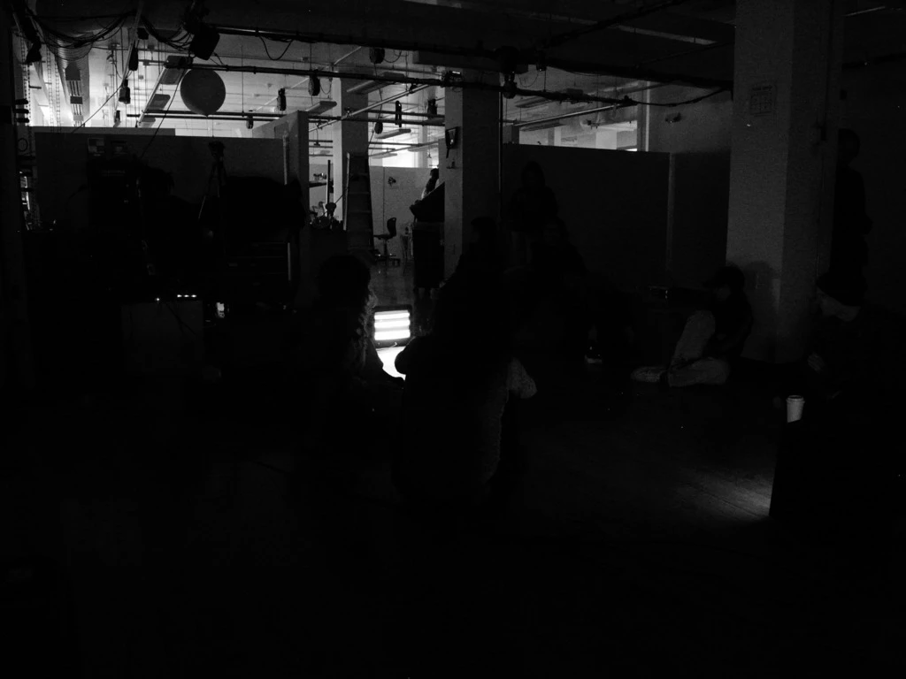
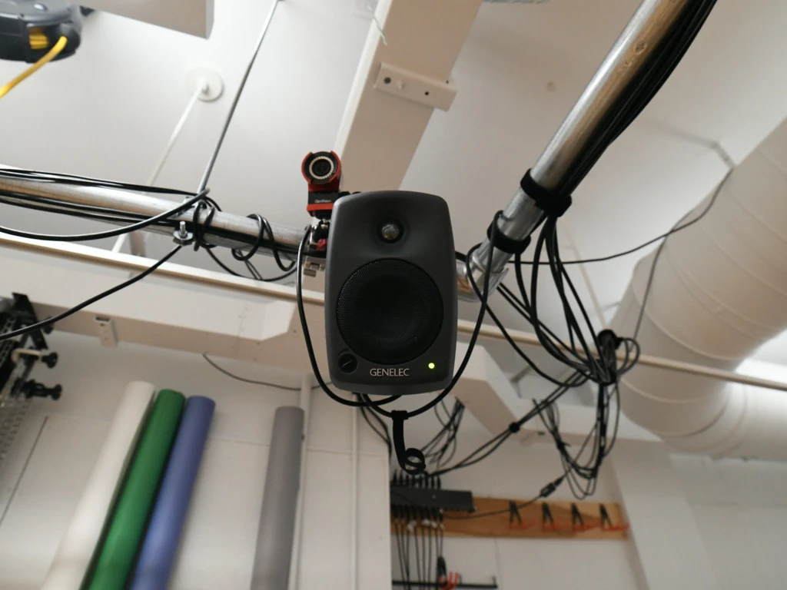
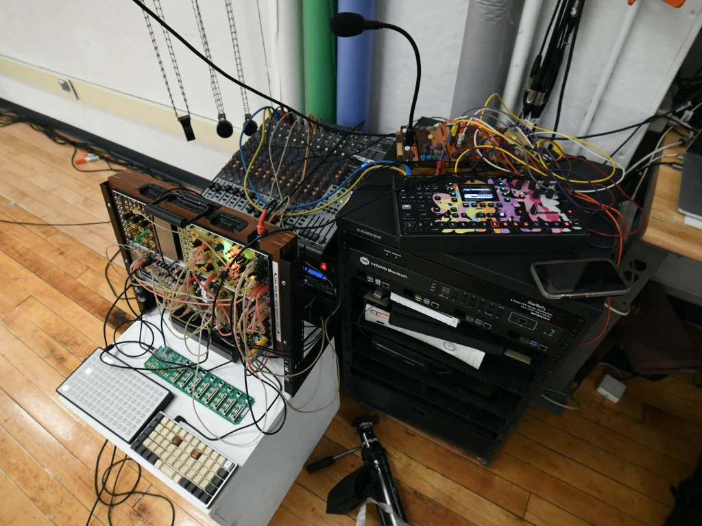
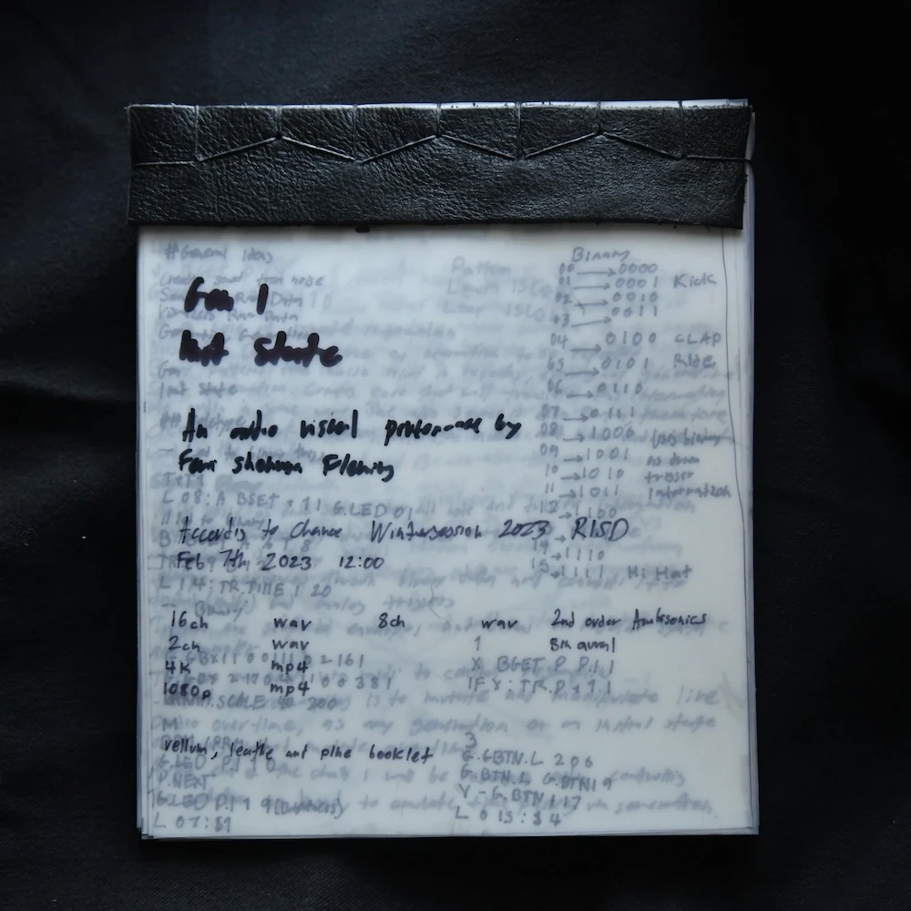
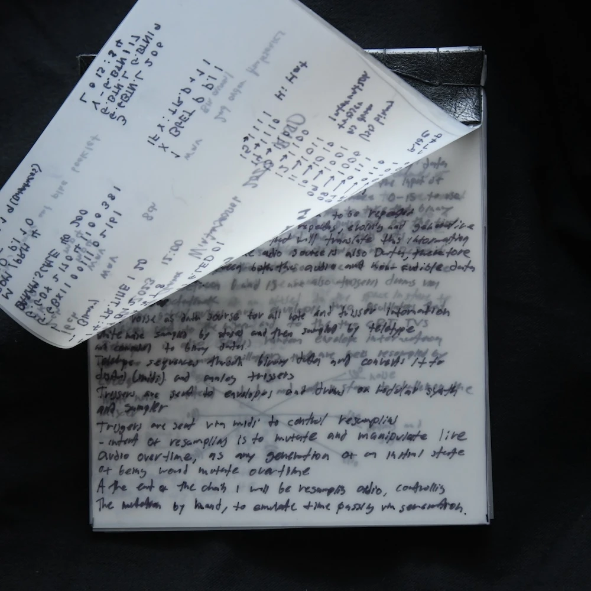

According to Chance | RISD Wintersession 2023

Watch the performance
Listen to the performance
All sound sources used in this work are comprised of simple waveforms and white noise, inspired by the work of Alva Noto and Ryoji Ikeda. This piece was preformed on February 8th In the Digital Media building at RISD. The piece was performed in 2nd order ambisonics on an 8 channel Genelec speaker array using Reaper, IEM plugins and a Korg Nanocontrol. All recordings of this piece are binaural for stereo listening. Monome Teletype provided all binary pattern and rhythm generation, and Grid was used as an interface for controlling various teletype operators.



